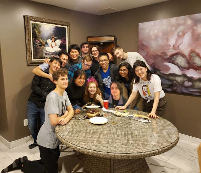

My name is Dennis and I am a second-year computer science co-op student, hopefully minoring in mathematics.
I am hoping go into the computer science field as a future career. The fields I have interest in are programming
software, game design, and web development. My childhood was filled with technology, learning how to use the computer
and figuring out what video games I enjoyed. This experience is what probably led to me pursuing a degree in computer
science. In the picture included in this section, I am the one in the blue computer science shirt. Presently, this is
my 4th semester at the University of Windsor. I have enjoyed my experiences and gained new skills and knowledge since
enrolling here during the fall 2019 semester. With my first teaching assistant position last fall, I have gained more
experience and enjoyed helping others learn how to program. I am hopeful to see what will happen in the last half of
my years at the university.
Before coming to the University, I went to St. Anne's Catholic High School. From there, I learned what I had interests
in and gained some friends who had the same interests as me. The things I remember well from there were the visual arts
classes, the technology classes, and the after school tabletop game club that my friends and I would meet up at, ran by
our history teacher that we respected. Thanks to this club and my friend group, I was able to break out of the shy
nature I had for most of high school, just before university began for all of us. Some of them I've been friends
with since elementary school and some since the end of high school and we've enjoyed our times together. They have helped me
grow as a person alongside them.
I'm normally quiet around other people but after I get used to them, I don't mind being around them. I feel I am well
organized because I sort almost everything in my life and am particular about where things go, like making an archive.
of my life I have knowledge of several programming languages, which are discussed in "My Interests" page. During all of
high school and the first three semesters of university, I studied hard to make sure I passed each semester with a good average.
I have faced several tough times in my life but made it through them, including the passing of my grandpa in Grade 9 and a bad falling
out with another group of friends last March. These tough times allowed me to develop as a person, the major lesson
with those times was that nothing lasts forever, but we can adapt to those situations and hope for the better.